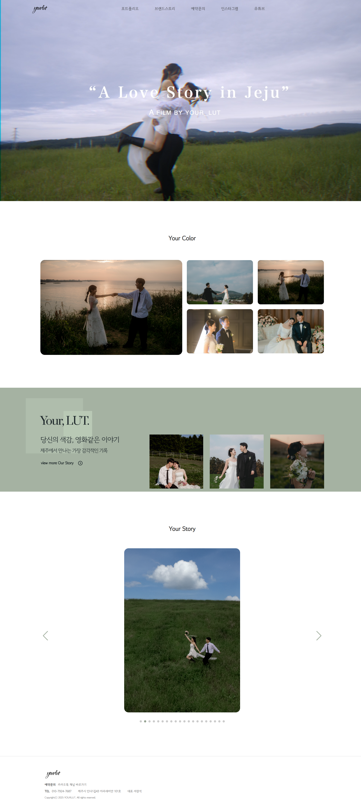
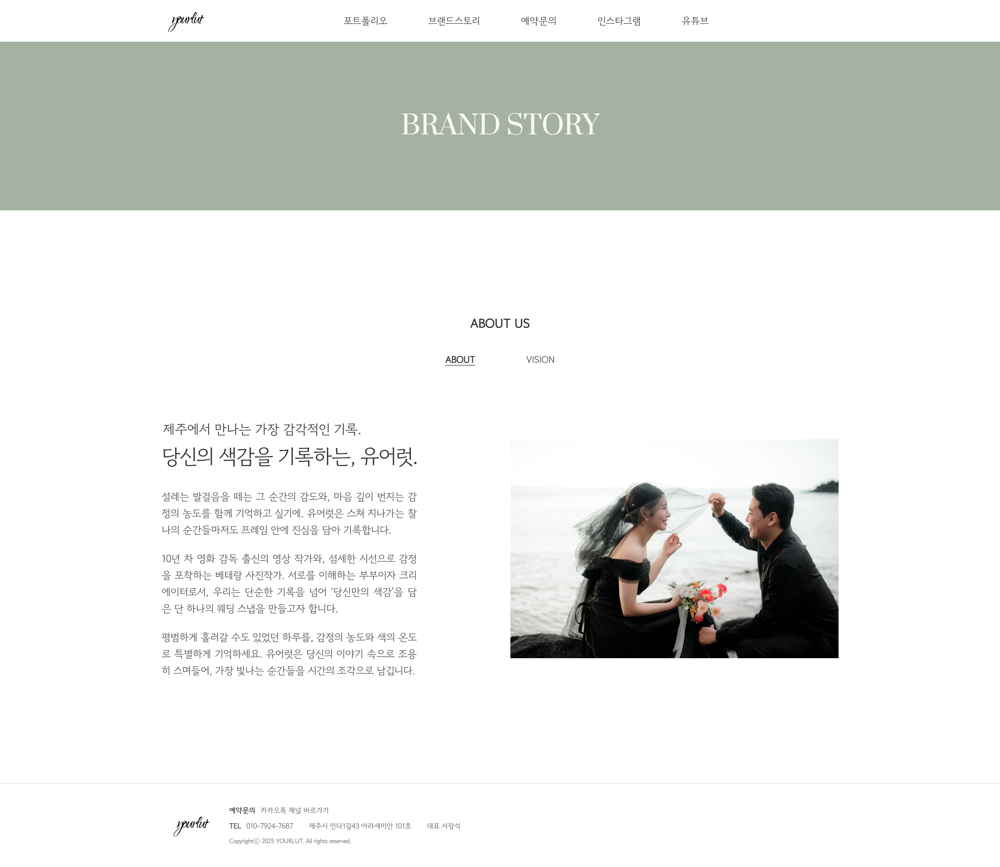
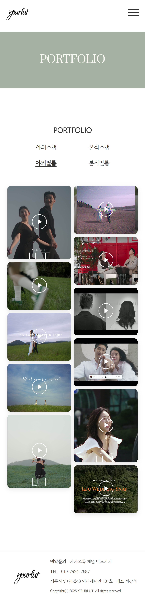

Project Workflow
01
Discovery
- 실제 운영 중인 업체의 기존 채널(인스타그램, 카카오채널) 분석
- 모바일 문의 비중이 높다는 클라이언트 요청 파악
- '당신의 색감' 브랜드 컨셉 및 제주 지역성 이해
- 포트폴리오/브랜드스토리/예약문의 중심의 페이지 구조 합의
02
Planning
- 모바일 문의 비중을 고려한 반응형 우선 설계
- 갤러리 중심 IA 구성 (야외/본식/스냅/필름 카테고리 분류)
- 클라이언트가 직접 이미지 교체 가능하도록 파일명 규칙 설계
- Google Analytics 설치 계획 수립
03
Design
- #A5B2A2 — 제주의 자연과 브랜드 컨셉 '당신의 색감'을 반영한 메인 컬러
- GowoonDodum(본문) + Prata(제목) 조합으로 따뜻함과 고급스러움 동시 표현
- Figma로 와이어프레임 및 UI 디자인
- 카피라이팅 직접 작성
04
Development
- 스크롤 이벤트로 hero 영상 축소/라운드 전환 효과 구현
- mouseenter + setInterval 조합으로 갤러리 자동 롤링 구현
- 라이트박스, 카테고리 필터 직접 구현
- Swiper.js로 무한 자동재생 슬라이드 적용
- 반응형 분기점별 모바일/데스크탑 동작 분리 처리
05
QA
- 모바일/태블릿/데스크탑 반응형 검증
- 갤러리 이미지 lazy loading 적용
- 크로스 브라우징 테스트 (Chrome, Safari, Mobile Safari)
- 클라이언트 검토 후 피드백 반영
06
Deploy
- 카페24 호스팅 + 가비아 도메인 연결 및 배포
- 클라이언트 검토용 GitHub Pages 임시 배포 → 최종 피드백 반영 후 실서버 이전
- 이미지 교체 방법 클라이언트 인수인계
- Google Analytics 설치 및 데이터 모니터링
- 운영 후 소셜미디어 유입 데이터 기반 개선 제안




